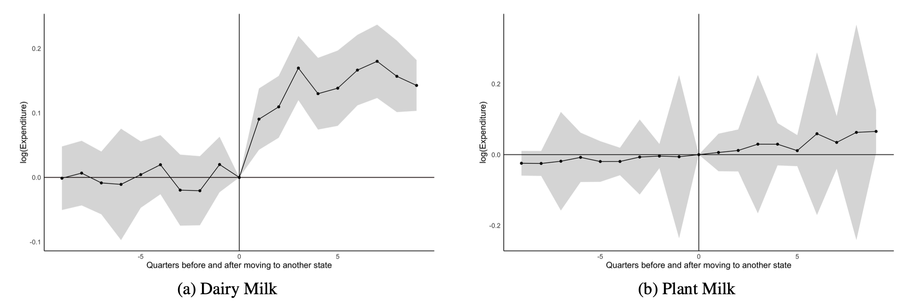
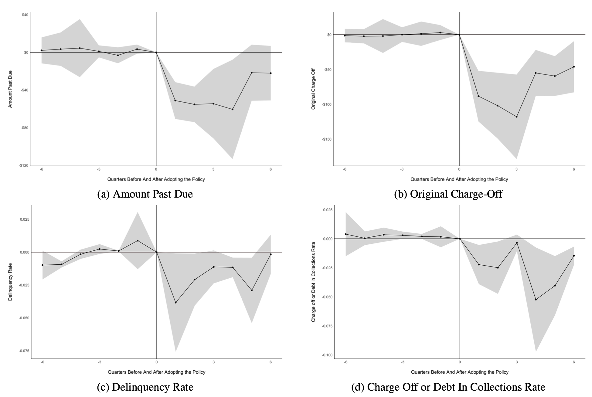
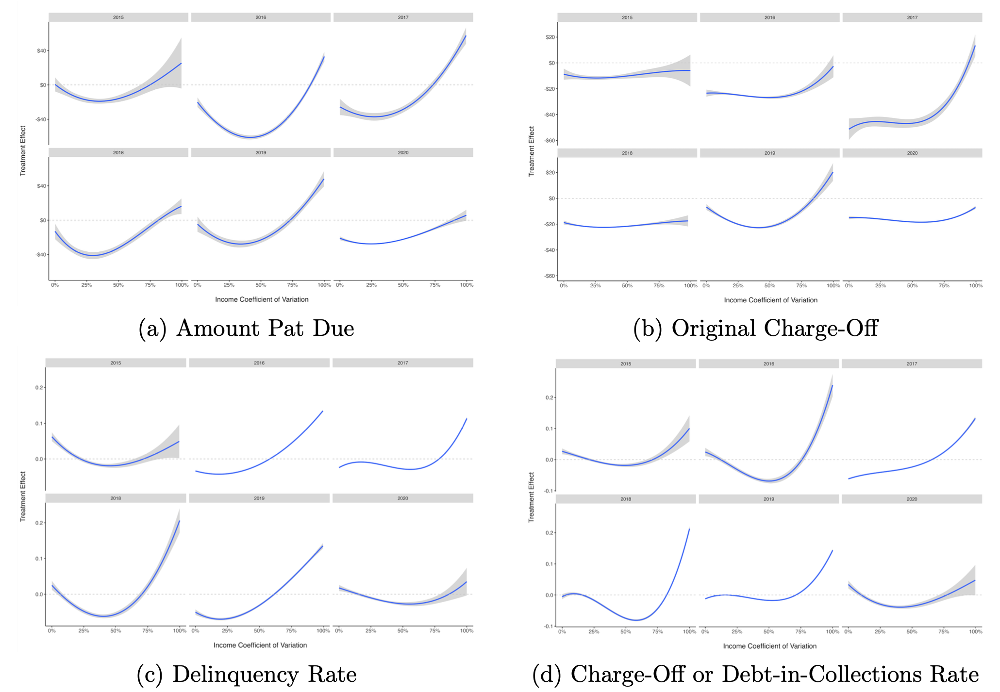

From Dairy Aisle
to Payday Loans
An In-depth Examination
of Consumer Economics
in the U.S.
Author: Nicole Golden (2024)
Roadmap
- Motivation
- Research Question
- Background
- Data
- Model
- Results
- Conclusions & Comments
- Q & A
1 Got Milk?
Analyzing Milk
Consumption Patterns
in the Context of
U.S. Migration
Motivation: Why Milk Consumption?
- Dairy Milk: consistent decline
- 1970: 1 cup daily per capita
- 2019: \( \frac{1}{2} \) cup (-50%)
- Plant Milk: partly contribute to the decline
- Price premium
- Lactose-free, nutrient substitute, environmentally friendly, animal welfare, COVID-19
Source: USDA (2022), Loh, Seah and Looi (2021), and Foods Association (2022).
Research Question
- How does migration to another state affect dairy & plant milk consumption?
- Expenditure patterns
- New local environment
- Contribution:
- Research gaps → quantify
- Dietary policies: WIC
Background: Dairy vs Plant Milk

Source: Plant Based Foods Association (2020), Gerliani, Hammami and Aider (2019), and Boaitey and Minegishi (2020). Image source: author.
Data: Nielsen Consumer Panel
- Coverage: weekly milk purchases from 200k HHs in 49 states
- Period: 2004 ~ 2019
- Dairy Milk: whole, 2%, 1.5%, 1%, 0.5%, skim, lactose-free, goat, other
- Plant Milk: almond, soy, rice, oat, flax, cashew, other
- Outcome: log quarterly milk expenditures per person
- HH Chars.: age, educ, income, marriage, employment, children, race
- Treatment: whether moved to another state
- Final Data: aggregated at quarterly level for each HH (in 2019 $)
- 5k movers & 185k non-movers
Source: Nielsen Homescan Consumer Panel. Note: The data excludes states of Alaska & Hawaii. The movers are those who moved only once.
Pre-Check: Comparing (Non)Movers
- Movers & non-movers are comparable:
- Movers: more white/older, higher income/educ (same marriage rate)
- Non-movers: larger HH size, slightly higher employment rate, more young children
- HHs move at random:
- Logit Model: test if HHs move at random
- Results show HHs do move randomly
Note: There are 4,777 movers and 185,230 non-movers. The parallel trend is not very informative since the treatment is staggered, hence it's omitted here.
Pre-Check: Event Study 1
Consumption Patterns

Note: Following Harding and Rapson (2019), the event study 1 model is \( ln(y)_{it} = \alpha_{i} + \tau_{t} + \sum\limits_{r = \underline{m}, r \neq -1}^{\overline{m}} \beta_{r} \cdot I_{it}+ X^\prime_{it}\Gamma + \epsilon_{it} \), where \( |\underline{m}| = \overline{m} = 8 \), and \( I_{it} \) is an indicator variable set equal to one if household \( i \) in quarter \( t \) is \( r \) months after it has moved to another state.
DID Model 1: Consumption Patterns
-
\[
ln(y)_{it} = \alpha_{i} + \tau_{t} + \beta D_{it} + X_{it}^\prime\Gamma + \epsilon_{it}
\]
- \( ln(y)_{it} \) = Log quarterly milk expenditures per person
- \( \alpha_{i} \), \( \tau_{t} \) = HH & quarter FE
- \( \beta \) = Treatment effect
- \( D_{it} \) = Treatment
- \( X_{it} \) = HH chars.
- \( \Gamma \) = Coefficients for \( X_{it}\)
Source: Harding and Rapson (2019).
DID Model 1: Main Results
| Dairy Milk | Plant Milk | |
|---|---|---|
| Post Move | 0.012** (0.006) |
-0.015* (0.008) |
| Obs. | 3,323,626 | 434,264 |
Note: The characteristics include age, educ, income, marital status, employment, children, and race. The SEs are clustered at HH level.
*** Significant at 1 percent level.** Significant at 5 percent level.* Significant at 10 percent level.
DID Model 1: Placebo Test
- Placebo Test: unobservables do not affect results
- Use pre-treatment data only
- Randomly assign fake treatment period
→ 2 quarters prior to real treatment - Re-run DID Model 1
Source: Harding and Rapson (2019).
DID Model 1: Placebo Test Results
| Dairy Milk | Plant Milk | |
|---|---|---|
| Post Move | 0.004 (0.006) |
-0.012 (0.013) |
| Obs. | 3,263,218 | 424,055 |
Note: The characteristics include age, educ, income, marital status, employment, children, and race. The SEs are clustered at HH level.
Pre-Check: Event Study 2
Local Environment

Note: Following Finkelstein, Gentzkow and Williams (2016), the event study 2 model is \( ln(y)_{it} = \alpha_{i} + \tau_{t} + \sum\limits_{r=\underline{m}}^{\overline{m}} \theta_{r} \cdot I_{r} \cdot \Delta_{i} + X^\prime_{it}\Gamma + \epsilon_{it} \), where \( \theta_{r} \) are coefficients, and \(\Delta_{i} = \bar{y}_{N,i} - \bar{y}_{O,i} \) is the size of the move.
DID Model 2: Local Environment
-
\[
ln(y)_{it} = \alpha_{i} + \tau_{t} + \sum\limits_{r=\underline{m}}^{\overline{m}} \theta_{r} \cdot D_{it} \cdot \Delta_{i} + X^\prime_{it}\Gamma + \epsilon_{it}
\]
- \( \theta_{r} \) = Coefficients for \( D_{it} \cdot \Delta_{i} \)
- \( D_{it} \) = 1 if HH \( i \) moved to another state in quarter \( t \), 0 otherwise
- \( \Delta_{i} = \bar{y}_{N,i} - \bar{y}_{O,i} \), or size of the move
DID Model 2: Main Results
| Dairy Milk | Plant Milk | |
|---|---|---|
| \( \Delta \cdot \)Post Move | 0.534* (0.169) |
0.173** (0.076) |
| Obs. | 148,786 | 22,484 |
Note: The characteristics include age, educ, income, marital status, employment, children, and race. \( \Delta_{i} \) is the difference in the average logarithm of milk expenditures between the new state and the original state. The SEs are clustered at HH level.
*** Significant at 1 percent level.** Significant at 5 percent level.* Significant at 10 percent level.
Conclusions & Comments
- Conclusions:
- How migration affect dairy & plant milk consumption?
- Finding 1: HH ↑ dairy milk expenditure by 1.2% post move
HH ↓ plant milk expenditure by 1.5% post move - Finding 2:New destination explains 53% diff in dairy milk
New destination explains 17% diff in plant milk - Limitations:
- Data covers some major mkts
- Plant milk not broadly available
- Plant milk results may not be representative
2 Got Money?
Investigating the Impact of
Payday Loan
Extended Payment Plans
on Financial Well-being
Motivation: Why Financial Health?
67% Americans not financially healthy - 2020 USC survey data of 6,430 respondents

Source: Financial Health Network (2020), Brookings (2021), and USC (2020). The figures and statistics are redacted.
Motivation: Payday loans
- Non-prime Credit: 12 million payday loan users
- Payday Loan:
- Small-dollar, short-term, unsecured
- High APRs: 300% ~ 500%
- 22 states (effectively) banned
- 15 states passed extended payment plans to protect payday loan borrowers
Source: CFPB (2021).
Research Question
- Do extended payment plans improve financial health?
- Wang and Burke (2022):
- Texas, Austin, Dallas require disclosing cost of payday loans vs other credit products
- Led to significant decline in payday loan volume
- Contribution: a broader payday loan policy applied to more states
Background: Payday Loans
Small-dollar, legal in 29 states (2020) - Loan Limit $500, unsecured, repay in next payday
- High APRs: 300% ~ 500% (credit cards: 12% ~ 30%)
- Features: "cash, quick, fast, easy, emergency bills"
- Rollover: charges will double!
- "Debt Traps"
Source: CFPB (2021).
Background:
Extended Payment Plans
Key features: - Repay in 3 ~ 4 installments (salient) with zero charges
- Minimum repayment term 60 ~ 90 days
- Limit use to once a year
- Eligible only if reach a threshold of rollovers
- Require lenders to disclose availability of the plans
Source: CFPB (2022).
Data: Clarity Payday Loan
Coverage: 60 million or 70% of non-prime consumers - Period: 2015 ~ 2020
- Borrower Chars.: age, net monthly income, pay frequency, housing status, months at address
- Financial Health: amount past due, original charge-off, delinquency rate, charge-off or debt-in-collections rate
- Final Data: aggregated at quarterly level for each state (in 2020 $)
- 14 control and 5 treated states
Source: Clarity.
Data: Extended Payment Plans
Legal Status
| Deleware | 2018-12-12 | 17 | 8 |
| Florida | 2019-07-01 | 20 | 5 |
| Louisiana | 2015-01-01 | 3 | 22 |
| Nevada | 2017-07-01 | 12 | 13 |
| Utah | 2016-07-01 | 8 | 17 |
Data source: Refer to each state's deferred deposit transaction law.
Pre-check: Borrowers Comparable
- Financial Health:
- Treated: a bit higher amount past due, original charge-off
- Control: a bit higher delinquency rate, charge-off or debt-in-collection rate
- Borrowers Chars.:
- Treated: more likely to rent/live with friends, reside longer at current place, paid weekly
- Control: a bit younger & lower income
Pre-check: Event Study
Note: Following Sun and Abraham (2021), the model is \( y_{it} = \alpha_{i} + \beta_{t} + \sum\limits_{g}\sum\limits_{r \neq -1} \mu_{g,r} \left(\textbf{1}{(G_{i}= g)} \times event\_time_{it}^{r}\right) + \epsilon_{it} \).
Model: SDiD
-
\[
\hat{\tau}^{SDID} = argmin_{\mu, \alpha, \beta, \tau} \Bigl\{\sum_{i = 1}^{N} \sum_{t = 1}^{T} (Y_{it} - \mu - \alpha_{i} - \beta_{t} - \tau D_{it})^{2} \hat{w}_{i} \hat{\lambda}_{t} \Bigl\}
\]
- \( Y_{it} \) = financial health in state \(i \), quarter \(t \)
- \( \mu \) = intercept
- \( \alpha_{i} \), \( \beta_{t} \) = state, quarter fixed effects
- \( \tau \) = ATT
- \( D_{it} \) = 1 if passed extended payment plans, 0 otherwise
- \( \hat{w}_{i} \), \( \hat{\lambda}_{t} \) = unit, time weights
Source: Arkhangelsky et al. (2021).
SDiD: Weights
-
\[ Unit: \hat{w}_{i} = argmin\| \bar{y}_{pre, tr} - (w_{0} + Y_{pre, co}w_{co})\|_{2}^{2} + \zeta T_{pre}\|w_{co}\|^2_{2} \]
- Match pre-treatment trends between control & treated units
- Parallel trend → exploits advantages of DiD & SC \[ Time: \hat{\lambda}_{t} = argmin\| \bar{y}_{post, co} - (\lambda_{0} + \lambda_{pre}Y_{pre, co} + \lambda_{0})\|_{2}^{2} \]
- Balance pre- & post-treatment periods for control units
- Increase precision of treatment effect estimates
Notes: Unit weights in a simpler term: \( \sum_{i=1}^{N_{co}} \hat{w}_{i}Y_{it} \approx N_{tr}^{-1}\sum_{i=N_{co}+1}^{N}Y_{it} \) for all \( t = 1, 2, ..., T_{pre} \). Time weights in simpler term, \( \sum_{t=1}^{T_{pre}}\lambda_{t}Y_{it}\approx T_{post}^{-1}\sum_{T_{pre}+1}Y_{it} \) for all \( i=1, 2, ..., N_{co} \).
SDiD: Staggered Adoption
-
\[ \frac{8}{65}ATT_{DE} + \frac{5}{65}ATT_{FL} + \frac{22}{65}ATT_{LA} + \frac{13}{65}ATT_{NV} + \frac{17}{65}ATT_{UT} \]
- Run synthetic DiD for each treated state
- Get 5 ATTs
- Re-weight ATT: by ratio of a state's treated vs total treated periods
Source: Clarke et al. (2023).
SDID: Amount Past Due

Notes: The red line represents the treated state, and the gray line is the synthetic control state.
SDID: Main results
| DID | SDID | |
|---|---|---|
| Amount Past Due | −30.5277** (14.1838) |
−25.3166* (13.8418) |
| Original Charge-Off | −52.8416*** (17.1973) |
−49.4988** (19.9673) |
| Delinquency Rate | −0.0308* (0.0180) |
−0.0289** (0.0136) |
| Charge-Off or Debt-in-Collections Rate | −0.0351* (0.0212) |
−0.0265** (0.0135) |
| Obs. | 456 | 456 |
Note: The characteristics include age, income, months, housing status, and pay frequency. The model also includes HH & quarter FE. The SEs for the SDiD model are obtained by bootstrap with 1,000 iterations. *** means 99% significance level, ** means 95% significance level, and * means 90% significance level.
SDID: Robustness Check
| SDID | |
|---|---|
| Amount Past Due | 0.3218 (0.4370) |
| Original Charge-Off | −2.2471 (2.8075) |
| Delinquency Rate | −0.0061 (0.0150) |
| Charge-Off or Debt-in-Collections Rate | −0.0010 (0.0010) |
| Obs. | 408 |
Note: The characteristics include age, income, months, housing status, and pay frequency. The model also includes HH & quarter FE. The SEs for the SDiD model are obtained by bootstrap with 1,000 iterations. The fake (randomly sampled) states are OK, TX, MO, KY, and NE.
Conclusions & Comments
- Conclusions:
- Payday loan borrowers prone to "debt traps"
- Use Clarity, best coverage of payday loan data
- Effect of extended payment plans on financial health
- Positive treatment effects
- Limitations: Only 5 treated states (10 excluded)
- Future Work:
- Both low & high income borrow payday loans
- Both may experience negative income volatility
- Heterogeneous treatment effect
3 Money Matters?
Deciphering the Impact of
Payday Loan
Extended Payment Plans
on Financial Well-being
amidst Income Volatility
Motivation: 50%
- Income Volatility still prevalent:
- Risen since 1970s
- Affects 50% population (2010)
- 37% HHs can't cover $400 expense (2022)
- 4.5% (or 5.9 mil) HHs "unbanked"
- 14.1% (or 18.7 mil) HHs "underbanked"
Source: Andersen et al. (2015), Federal Reserve (2023), and FDIC (2023).
Motivation: The Lows & Highs

Data source: Clarity 2015 data. Note: “Low income” if an individual’s mean income is below third quartile of $3,524, and “high income” is above $3,524. “Low volatility” if an individual’s income CV is below 75%, and “high volatility” if it is above 75%.
Motivation: Credit! Credit!
- Experience volatile Income:
- No access to traditional credit
- Or fear to jeopardize credit
- Resort to payday loans → "Predatory"
- Extended payment plans
Research Question
- How do extended payment plans improve financial health of borrowers facing varying income volatility?
Extension: Golden (2023) - From ATE to CATE
- Contribution:
- Intra-year (higher frequency) income volatility
- Implication: Financial health (policy, indicators)
Background
Data: Clarity Payday Loan
About Clarity data About extended payment plans legal status - Income Volatility:
- Income Coefficient of Variation
- \( income\_CV_{it} = \frac{SD(income_{it})}{Mean(income_{it})} \times 100\% \)
- Final Data: aggregated at quarterly level for each borrower for each year
Source: Clarity, CFPB (2022), and Hannagan and Morduch (2015).
Pre-Check: Borrowers Comparable
- Financial Health:
- Treated: a bit higher values
- Borrowers Chars.:
- Treated: more reside longer at current place, paid monthly
- Control: more paid weekly, the rest similar to treated
Model: Double ML (ATE)
-
\[ y = g_{0}(D, X) + \zeta,\ E[\zeta|X, D] = 0 \]
\[ D = m_{0}(X) + \nu,\ E[\nu|X] = 0 \]
\[ ATE = E[g_{0}(1, X) - g_{0}(0, X)] \]
- \( g_{0}(\cdot) \) = Nonlinear function (ML model)
- \( y \) = Financial health
- \( D = 1 \) if borrower lives in treated state, 0 otherwise
- \( X \) = Borrower features
- \( m_{0}(\cdot) \) = Nonlinear function (ML model)
Source: Chetverikov et al. (2016) and Chernozhukov et al (2018).
Model: Double ML (ATE)
- Use 5-fold cross-validation
- Use random forest (ML) to get estimators for each fold
- Maximum depth: 5
- Minimum sample leaf: 2
- ATE: average the five estimators
Source: Chetverikov et al. (2016) and Chernozhukov et al (2018).
Main Results (ATE)
| Year | Amount Past Due | Original Charge-Off | Delinquency Rate | Charge-Off or Debt in Collections Rate |
|---|---|---|---|---|
| 2015 | -14.3384 (16.5212) |
-10.7449* (6.2517) |
-0.0018 (0.0069) |
-0.0040 (0.0937) |
| 2020 | -24.9912*** (9.0751) |
-15.8660*** (2.9805) |
-0.0121* (0.0066) |
-0.0240** (0.0101) |
Notes:
(1) All years' results are negative, no apparent pattern;
(2) Amount past due & delinquency rate not significant only in 2015;
(3) Charge-Off or Debt in Collections Rate not significant in 2015 & 2016;
(4) 2020: -43.48% borrowers from 2019 to 2020, stimulus package effect.
Model: Double ML (CATE)
-
\[ \theta_{0}(X) = E[Y(1) - Y(0)|X=x] \]
- \( x \) = Income CV
Source: Semenova and Chernozhukov (2021) and Microsoft (2023).
CATE: Amount Past Due
Conclusions & Comments
- Conclusion:
- Treatment effect varies from year to year, no clear pattern
- Between first quartile and median: most benefit
- Beyond third quartile: little to no benefit
- Comments:
- Income CV invariant to scales or absolute changes in income
- Not show income dynamics over time
- Future work: use other income volatility measurements